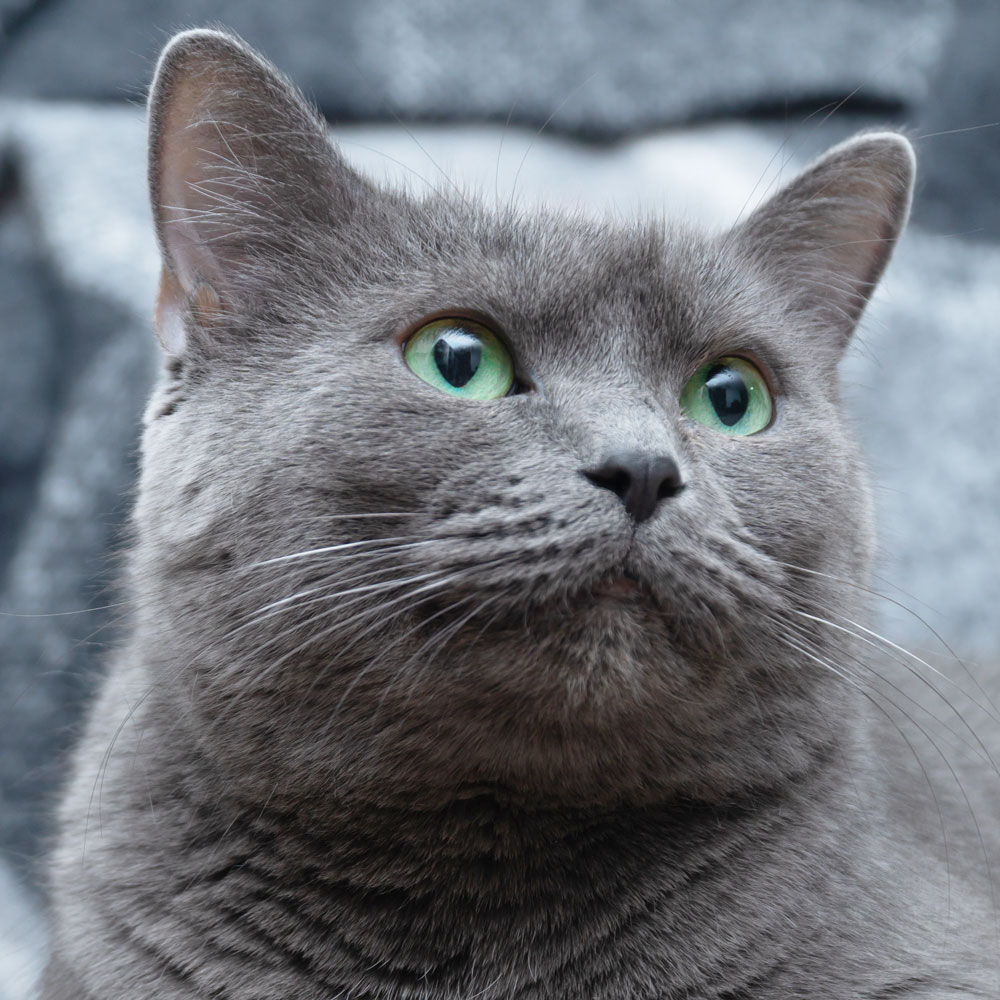

Oxford-IIIT Pet · CNN
01 — Breed Identification
What kind of cat do you have?
Unggah foto, dan kenali ras kucingmu dalam sekejap.
Drop in a photo and a convolutional network trained on the Oxford-IIIT Pet dataset estimates the breed — along with how confident it is about the guess.
Mulai deteksi · gratis
- 37 breeds
- Trained locally
- Runs on 127.0.0.1

02 — Detector
02 — Detector
Upload a photo of your cat.
Unggah foto kucingmu — pastikan wajah dan bulunya terlihat jelas.
Drop your photo here
or browse files · JPG, PNG
Atau seret foto ke sini
No file selected · Belum ada foto